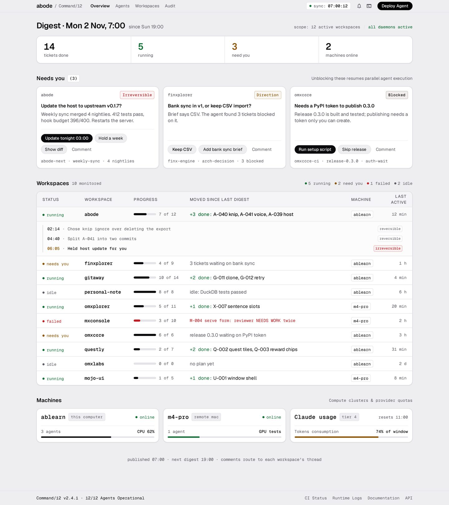
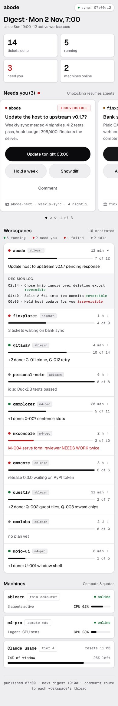
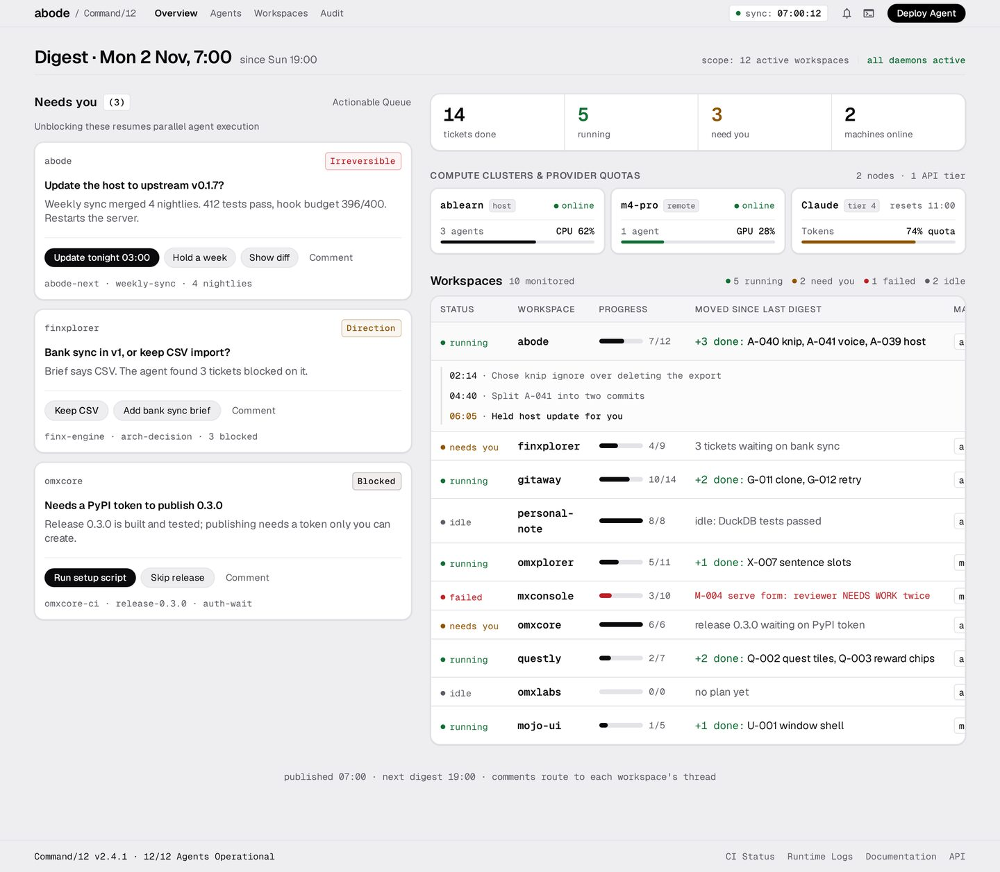
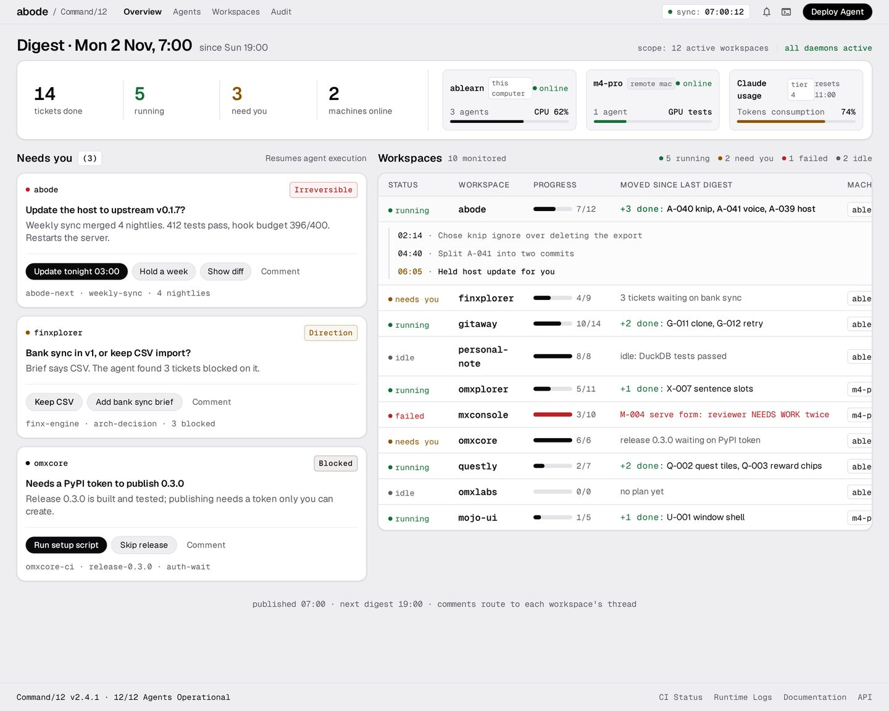

The page republished every morning and evening. Decisions waiting for you come first, then every workspace. omxqua · Developer · Graphite. Rows open in place to show the decision log, and the option pills can be tapped. Tick the screens you want; the picks stay on this device.
Three decision cards across the top, with the most urgent one as the dark focal card. Below them is the control-room table: one row per workspace and what moved since last time. Click a row and its decision log opens in place. On the phone, the decisions swipe sideways with the next one peeking, and the workspaces become rows you can tap.
A fixed queue on the left holds every decision as a stack you work down. On the right, one big number says what happened overnight, with the table under it. On the phone, decisions arrive one at a time as a card stack (answer it or skip to the next), and the workspaces sit below.
No separate inbox. Each workspace is a lane with one square per ticket (done, running, needs you, failed, to do), so the progress is the picture. A decision opens inside its own lane, right where the work is stuck, and the lanes that need you sort to the top.
Google Stitch drafted the same brief with the same Graphite tokens. Its layout is roomier and more spaced out than A. Stitch also invented some chrome we didn't ask for (nav tabs, a "Deploy Agent" button, a "Command/12" footer, a "tier 4" badge); whichever you pick, those come out. In both variants, the right-hand columns of the table are cut off.



